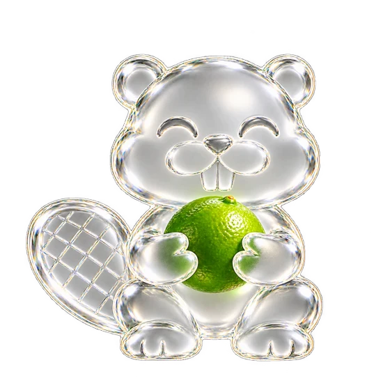

Drag a file.Drop it on him.Done.
File Beaver is a little beaver that lives on your Windows desktop. Drop a file on him and a ring of quick actions opens: convert, compress, crop, annotate or redact it without opening another app. Or tap Shift while dragging, anywhere on screen.
Free and open source. Windows 10 and 11, 64-bit. About 5 MB.
Drag the photo, then tap Shift
What's in the ring
Convert
Drop a photo or PDF on a format and a copy appears next to it.
JPG, PNG, WEBP, HEIC, TIFF, AVIF, BMP, PDF, DOCX
Tools
Photos open on the tools, PDFs on convert. Click the middle, or tap Shift again, to switch.
- Compress shrinks photos and PDFs
- Metadata strips camera details and GPS location
- Crop, Edit and Add BG open a quick editor
- Annotate adds arrows, boxes, text and numbered steps
- Redact blacks out or pixelates anything private
How it works
Drag any file
From File Explorer, the desktop or your browser's downloads. The beaver comes to the front when you do.
Drop it on the beaver
The ring opens around him. Or tap Shift anywhere and it opens under your cursor.
Drop on an action
The result is saved next to the original. The original never changes.
Your files stay on your PC
Everything happens on your computer. There's no account, no upload and no tracking. File Beaver only goes online to check for updates.
- Open source. Every line is on GitHub under the MIT licence.
- Signed updates. It only installs updates signed by the project, so a tampered download is refused.
- No admin needed. It installs for your account and removes itself cleanly.